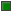
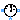
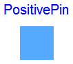
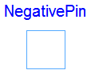

This package contains connector specifications and partial models for more complex components.
Extends from Modelica.Icons.InterfacesPackage (Icon for packages containing interfaces).
| Name | Description |
|---|---|
|  Pin | Basic connector |
| Positive connector | |
| Negative Connector | |
| Two pins | |
| Two pins, current through | |
| AbsoluteSensor | Partial potential sensor |
|  RelativeSensor | Partial voltage / current sensor |
| Partial voltage / current source |
The potential of this connector is the complex voltage and the flow variable is the complex current. The positive and negative pin are derived from this base connector.
PositivePin, NegativePin, Plug, PositivePlug, NegativePlug
| Type | Name | Description |
|---|---|---|
| ComplexVoltage | v | Complex potential at the node |
| flow ComplexCurrent | i | Complex current flowing into the pin |
connector Pin "Basic connector"
Modelica.SIunits.ComplexVoltage v "Complex potential at the node";
flow Modelica.SIunits.ComplexCurrent i
"Complex current flowing into the pin";
end Pin;
 Modelica.Electrical.QuasiStationary.SinglePhase.Interfaces.PositivePin
Modelica.Electrical.QuasiStationary.SinglePhase.Interfaces.PositivePin
The positive pin is based on Pin. Additionally the reference angle is specified in the connector. The time derivative of the reference angle is the actual angluar velocity of the quasi stationary voltage and current. The symbol is also designed such way to look different than the negative pin.
Pin, NegativePin, Plug, PositivePlug, NegativePlug
Extends from Pin (Basic connector).
| Type | Name | Description |
|---|---|---|
| ComplexVoltage | v | Complex potential at the node |
| flow ComplexCurrent | i | Complex current flowing into the pin |
| Reference | reference | Reference |
connector PositivePin "Positive connector" extends Pin; QuasiStationary.Types.Reference reference "Reference";end PositivePin;
 Modelica.Electrical.QuasiStationary.SinglePhase.Interfaces.NegativePin
Modelica.Electrical.QuasiStationary.SinglePhase.Interfaces.NegativePin
The negative pin is based on Pin. Additionally the reference angle is specified in the connector. The time derivative of the reference angle is the actual angluar velocity of the quasi stationary voltage and current. The symbol is also designed such way to look different than the positive pin.
Pin, PositivePin, Plug, PositivePlug, NegativePlug
Extends from Pin (Basic connector).
| Type | Name | Description |
|---|---|---|
| ComplexVoltage | v | Complex potential at the node |
| flow ComplexCurrent | i | Complex current flowing into the pin |
| Reference | reference | Reference |
connector NegativePin "Negative Connector" extends Pin; QuasiStationary.Types.Reference reference "Reference";end NegativePin;
 Modelica.Electrical.QuasiStationary.SinglePhase.Interfaces.TwoPin
Modelica.Electrical.QuasiStationary.SinglePhase.Interfaces.TwoPin

This partial model uses a positive and negative pin and defines the complex voltage difference as well as the complex current (into the positive pin). Additionally, the angular velocity of the quasi stationary system is explicitely defined as variable. This model is mainly intended to be used with graphical representation of user models.
PositivePin, NegativePin, OnePort
| Type | Name | Description |
|---|---|---|
| PositivePin | pin_p | Positive pin |
| NegativePin | pin_n | Negative pin |
partial model TwoPin "Two pins" Modelica.SIunits.ComplexVoltage v; Modelica.SIunits.ComplexCurrent i; Modelica.SIunits.AngularVelocity omega = der(pin_p.reference.gamma);PositivePin pin_p "Positive pin"; NegativePin pin_n "Negative pin"; equation Connections.branch(pin_p.reference, pin_n.reference); pin_p.reference.gamma = pin_n.reference.gamma; i = pin_p.i; v = pin_p.v - pin_n.v;end TwoPin;
Modelica.Electrical.QuasiStationary.SinglePhase.Interfaces.OnePort
This partial model is based on TwoPin and additionally considers the complex current balance of the positive and the negative pin. This model is intended to be used with textual representation of user models.
PositivePin, NegativePin, TwoPin
Extends from TwoPin (Two pins).
| Type | Name | Description |
|---|---|---|
| PositivePin | pin_p | Positive pin |
| NegativePin | pin_n | Negative pin |
partial model OnePort "Two pins, current through" extends TwoPin; equation pin_p.i + pin_n.i = Complex(0);end OnePort;

The absolute sensor partial model provides a single positive pin to measure the complex voltage. Additionally this model contains a proper icon and a definition of the angular velocity.
RelativeSensor, PotentialSensor, MultiPhase.Interfaces.AbsoluteSensor, MultiPhase.Interfaces.RelativeSensor
Extends from Modelica.Icons.RotationalSensor (Icon representing a round measurement device).
| Type | Name | Description |
|---|---|---|
| PositivePin | pin | Pin |
partial model AbsoluteSensor "Partial potential sensor" extends Modelica.Icons.RotationalSensor; Modelica.SIunits.AngularVelocity omega = der(pin.reference.gamma);PositivePin pin "Pin"; equation pin.i = Complex(0);end AbsoluteSensor;

The relative sensor partial model relies on the OnePort to measure the complex voltage, current or power. Additionally this model contains a proper icon and a definition of the angular velocity.
AbsoluteSensor, VoltageSensor, CurrentSensor, PowerSensor, MultiPhase.Interfaces.AbsoluteSensor, MultiPhase.Interfaces.RelativeSensor
Extends from Modelica.Icons.RotationalSensor (Icon representing a round measurement device), OnePort (Two pins, current through).
| Type | Name | Description |
|---|---|---|
| PositivePin | pin_p | Positive pin |
| NegativePin | pin_n | Negative pin |
| output ComplexOutput | y |
partial model RelativeSensor "Partial voltage / current sensor" extends Modelica.Icons.RotationalSensor; extends OnePort;Modelica.ComplexBlocks.Interfaces.ComplexOutput y; end RelativeSensor;

The source partial model relies on the OnePort and contains a proper icon.
VoltageSource, VariableVoltageSource, CurrentSource, VariableCurrentSource, MultiPhase.Interfaces.Source.
Extends from OnePort (Two pins, current through).
| Type | Name | Description |
|---|---|---|
| PositivePin | pin_p | Positive pin |
| NegativePin | pin_n | Negative pin |
partial model Source "Partial voltage / current source" extends OnePort; equation Connections.root(pin_p.reference);end Source;